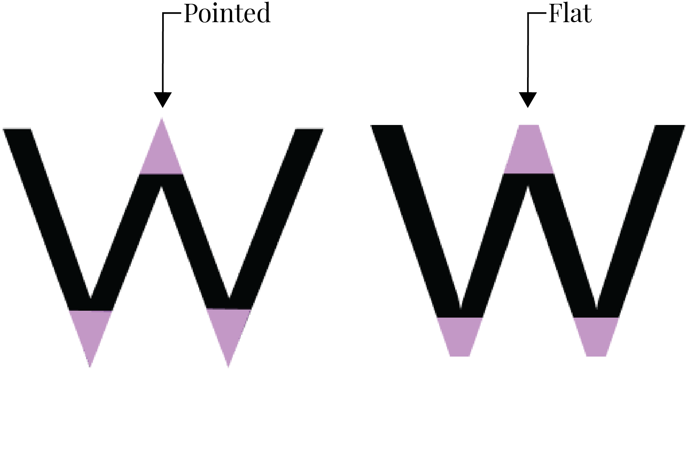
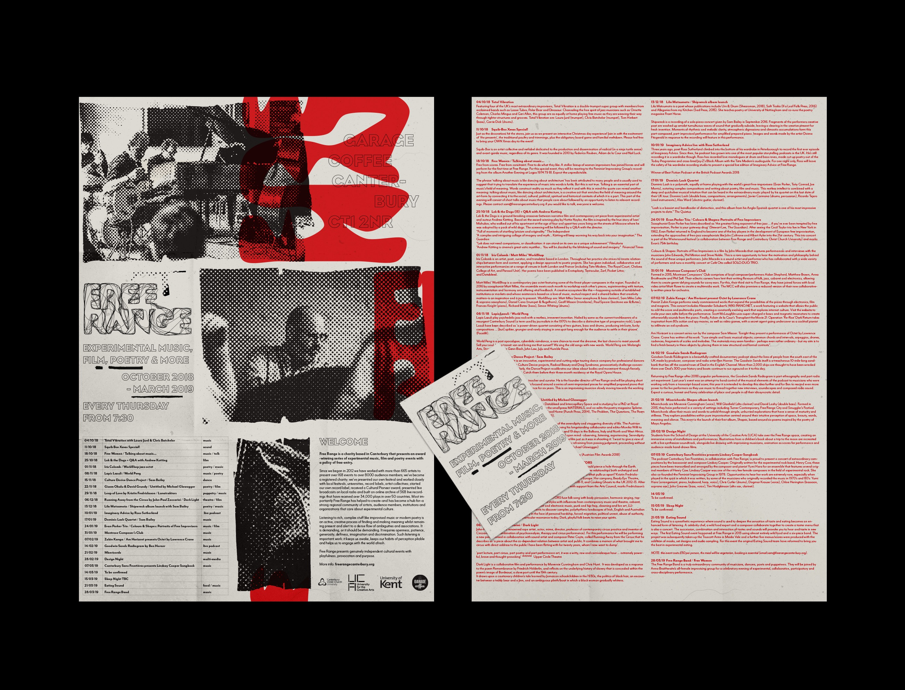

Futura was designed by Paul Renner and released in 1927 by the Bauer Type Foundry (Bauersche Gießere),
a type foundry based in Frankfurt, Germany. Renner created Futura as a contribution to the New Frankfurt project,
an affordable public housing program to promote simplicity, modernism, and industrialization. This typeface was advertised
as “the font of our time” in the early 20th century. Although Futura wasn’t officially associated with the famed Bauhaus
school, Futura’s clean design embodies the recognized “form follows function” ideology. This typeface carries a distinct
style based on geometric form in comparison to the elaborate, handwritten appearances of other sans serif typefaces.
Mr Eaves Mod
Mr Eaves is a sans serif font designed by Zuzana Licko in 2009 from the type foundry Emigre in Berkeley, California. A relatively
new addition to the type foundry and typographic scene, Mr Eaves was designed to complement its renowned serif counterpart, Mrs Eaves.
They are related to Baskerville, with both Mrs Eaves and Mr Eaves maintaining an uppercase “R” and “Q” with accents that are
reminiscent of the highly accented serif tail. The characters of Mr Eaves are made to look as if their original serif tails have been
cut off, most evident in the joint angle of the letter “z”. As a newer typeface, Mr Eaves is gradually being incorporated into modern
designs, particularly with Mr Eaves Sans as used in printed design.
Comparison
Similarities
Both Futura and Mr Eaves Mod have sharp vertical terminals on the uppercase C. Additionally, their stroke widths and cap heights are nearly the same.The stroke widths of the uppercase D's are alike, and the joint angles reflect a very similar angle.The bowls of the lowercase d's are similar in width and the exterior joint angles are similar.The lowercase o's are nearly identical in stroke width and x-height.The bowls of the lowercase p's are similar in width and the exterior joint angles are similar. Additionally, both letters share flat terminals.
Differences
There are subtle differences in the lowercase e between Futura and Mr Eaves Mod. While Futura leads to a sharp point,
Mr Eaves Mod wraps inward with a vertical slice on its hook.Futura has circular tittles, while Mr Eaves Mod has square tittles.In Futura, the lowercase j sports a circular tittle, while Mr Eaves Mod has square tittles. Additionally, Futura's j lacks a hook,
giving it an appearance similar to the letter i.In Futura, the tail of the uppercase Q is straight, and sharp, whereas in Mr Eaves Mod, it curves to the right and gradually tapers off.In Futura, the uppercase R has a narrow gap between its two legs, whereas the gap is wider in Mr Eaves Mod.

The joint angle on the lowercase w in Futura is pointed, while in Mr Eaves Mod it's flat on the bottom. The stem of the Futura 9 is straight, while the Mr Eaves Mod 9 stem is rounded.In Futura, the question mark exhibits a unique design resembling an upside-down, inverted S, while Mr Eaves Mod opts for a more traditional question mark.
Examples and visual references
Futura
Untitled (We Don't Need Another Hero), an art piece by famed contemporary artist Barbara Kruger.A Nike ad from the 1980s.The Apollo 11 Plaque, left on the Moon to commemorate the historic first landing.A poster for the iconic 2004 movie Mean Girls.The LEGO® SERIOUS PLAY® logo.
Mr Eaves Mod
Veracity skincare uses Mr Eaves as a subheading on a cosmetics package.Goodnight, Goodnight, Construction Site uses Mr Eaves to make a clear and legible title of an
illustrated children’s book.An older version of the Large Glass website uses Mr Eaves Sans for a heading style.

A design poster uses Mr Eaves Sans as a body text style.The flavor profile of a Twinings tea package is styled with Mr Eaves Sans.